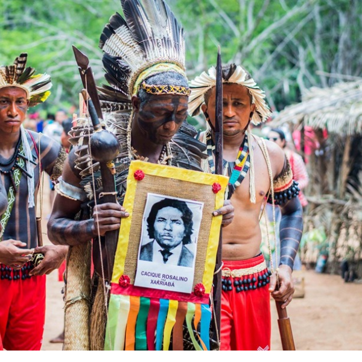

A Chacina Xakriabá, também conhecida como o Massacre de São Pedro do Pontal, foi um episódio trágico ocorrido em 1987 no território do povo indígena Xakriabá, localizado no município de São João das Missões, no norte de Minas Gerais. Este massacre é um marco doloroso na história dos Xakriabá, refletindo a longa e árdua luta pela demarcação de suas terras tradicionais, em meio a conflitos com fazendeiros e grileiros que disputavam o controle da região. 
A Chacina Xakriabá é lembrada como um símbolo da resistência indígena e da luta por justiça e direitos territoriais no Brasil. Ela marca não apenas um capítulo de violência e dor, mas também a força de um povo que, apesar das adversidades, continua a lutar pela preservação de sua cultura, suas tradições e suas terras. O massacre é um lembrete da histórica negligência e violência do Estado brasileiro em relação aos povos indígenas, bem como da persistente luta desses povos pela garantia de seus direitos constitucionais. A luta dos Xakriabá pela demarcação de seu território continua até os dias atuais, sendo um exemplo emblemático de resiliência diante da opressão. Além disso, o massacre é frequentemente evocado em debates sobre a proteção dos direitos indígenas, servindo como um alerta para os perigos que a ganância e a violência representam para as comunidades tradicionais.